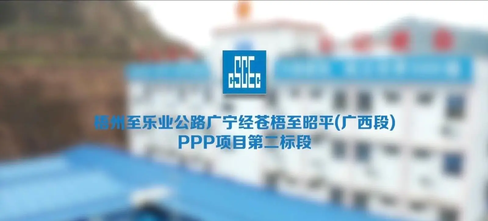
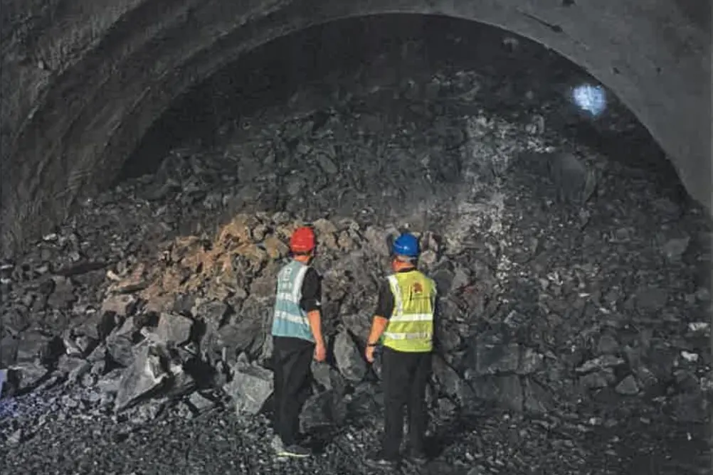

SELECTED WORK 05
CANGZHAO
EXPRESSWAY
苍昭高速项目传播
在大型基建项目一线参与新闻、重大节点、活动及宣传片内容，从工程现场、人物与项目建设中寻找可被传播的真实素材。


SITE
01 / PROJECT COMMUNICATION
让项目的复杂现场，
被更多人看见
工程传播不只发生在某一个节点。现场、画册、宣传片内容策划与文字记录共同构成项目对外表达的基础。
CONTENT & SCRIPT宣传片内容策划
与脚本撰写
与脚本撰写
围绕项目建设、品质工程与建设者故事梳理内容，并参与拍摄跟进。

02 / MILESTONE
当隧道掘进，
越过一万米
重大施工节点需要被及时记录，也需要回到工程本身。围绕单洞掘进破“万米”大关，完成现场图像与项目内容的持续跟进。



CANGZHAO / 05
From the construction site
to a story that can travel further.
工程仍在继续，
值得留下的现场也在不断发生。
SELECTED WORKS
返回更多项目 ↗Field Communication · Infrastructure · Video